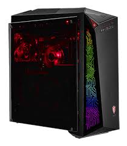
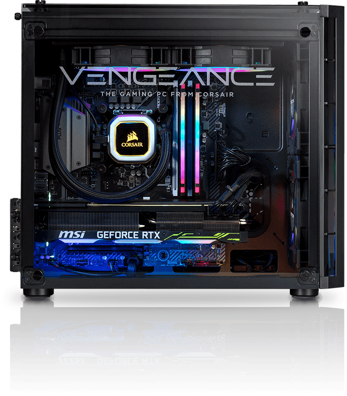

| MSI | CORSAIR | ASUS | TEMPEST |
|  |  | ||
| ASUS MSI GIGABYTE | PC Corsair iCUE 4000X RGB Mid-Tower ATX para PC - Negro 21 | *CHASIS DE LA FOTO 3 DE VIDRIO Y 4 VENTILADORES 350K ADICIONALES* | 4 ventiladores ARGB de 120 mm incluidos para un enfriamiento óptimo y un estilo único. |
| los laptops MSI se consolidan como una opción destacada para aquellos que buscan un rendimiento potente y una experiencia de juego excepcional |
Además de su sede mundial en Fremont, California, Corsair mantiene una planta de producción en la ciudad de Taoyuan City, Taiwán, |
empresa multinacional establecida en Taiwán desde 1989 que diseña y fabrica hardware de informática y electrónica de consumo. |
Somos la marca propia de PcComponentes dedicada a brindar productos gaming de alta gama que superan todas las expectativa |
| sede Nuevo Taipéi, Taiwán. | sede Fremont (California) | sede Taipéi, Taiwán, en el Distrito de Beitou. | sede taiwan |